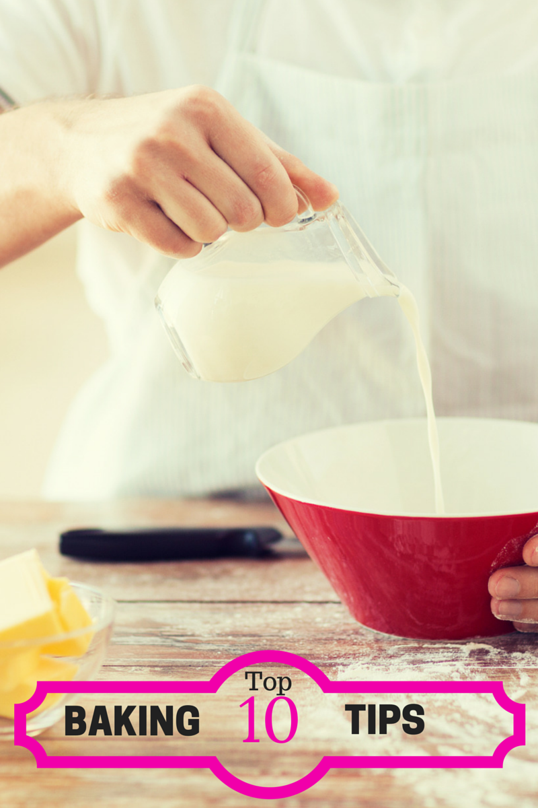

Tips & Adressen
Food Blog & More
10 korte tips bij het koken
- Zet zodra je thuis bent de oven en waterkoker aan en zet een pan op het vuur. Het duurt even voordat je potten en pannen op temperatuur zijn, dus is het zaak dat je daar mee begint vóórdat je gaat snijden.
- Zet voordat je gaat snijden een afvalbakje op het aanrecht. Dat kan ook een van je beslagkommen zijn. Je hoeft dan veel minder vaak op en neer naar de prullenbak te lopen en dat scheelt écht tijd.
- Snijd groenten in kleine blokjes, of rasp ze. Hoe kleiner de stukjes, hoe sneller ze gaar zijn. Dit is vooral handig in geval van knollen en wortels, zoals bietjes, knolselderij en aardappels.
- Eén broodje beleggen gaat sneller dan vier broodjes beleggen: snijd een baguette doormidden, doe het beleg erop en verdeel dan pas in vieren, in plaats van vier broodjes achter elkaar te maken.
- Snel soep maken? Gebruik bevroren groenten, dat scheelt heel wat snijwerk. Tijdens het bevriezen gaat er maar een klein deel van de mineralen en vitamines verloren.
- Gebruik al vlees of vis dat al gaar is als onderdeel van je maaltijd, zoals een rotisseriekip, garnaaltjes of gerookte zalm.
- Kies voor vlees zonder bot, dat is sneller gaar.
- Heb je echt weinig tijd? Sla het vlees dan plat met een vleeshamer of zware pan: hoe dunner, hoe sneller gaar.
- Een saus kookt veel sneller in als je een wijde pan gebruikt. Doordat het oppervlakte veel groter is, verdampt het vocht veel sneller.
- Proef altijd het eten dat je aan het bereiden bent, zo weet je precies of de kruiden en smaken goed zijn

Extra Informatie
Wilt u wekelijkse op de hoogte gehouden worden van onze nieuwe updates?
Abboneer u dan op onze nieuwsbrief via onderstaande link:
Abonneer Hier